Service photo credits
These illustrative service photos do not identify a booked professional or endorse a product. All photos are hosted locally. Each resized and cropped photo retains its original license. Images are provided under the licenses below; those licenses do not apply to the application code.
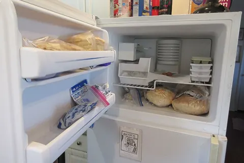
Appliances
Freezer door open on refrigerator in home kitchen in New Orleans, March 2025 — Infrogmation of New Orleans
CC BY-SA 2.0
Center cropped to 3:2, resized to 480/960 pixels, converted to WebP. Photo derivatives retain the original photo license.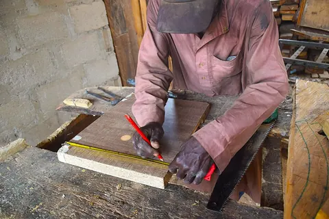
Carpentry
Carpenter working on an item 4 — Kambai Akau
CC BY-SA 4.0
Center cropped to 3:2, resized to 480/960 pixels, converted to WebP. Photo derivatives retain the original photo license.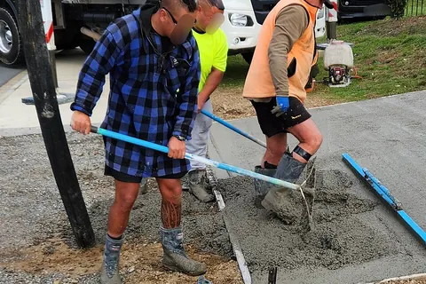
Concrete & Driveways
Concrete raking — Panamitsu
CC BY-SA 4.0
Center cropped to 3:2, resized to 480/960 pixels, converted to WebP. Photo derivatives retain the original photo license.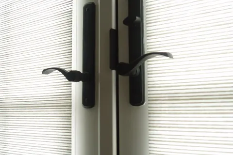
Doors & Hardware
Door handle — marya from San Luis Obispo, USA
CC BY 2.0
Center cropped to 3:2, resized to 480/960 pixels, converted to WebP. Photo derivatives retain the original photo license.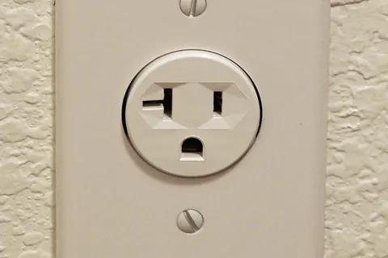
Electrical
Electrical-Outlet-8830c — Loadmaster (David R. Tribble)
CC BY-SA 3.0
Center cropped to 3:2, resized to 480/960 pixels, converted to WebP. Photo derivatives retain the original photo license.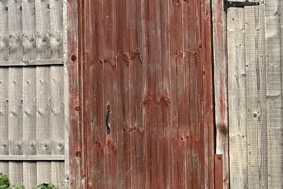
Fences & Gates
Arched wooden garden gate in residential fencing, Gillingham - red-brown stained timber with metal hinges and latch — OathOn
CC BY-SA 4.0
Center cropped to 3:2, resized to 480/960 pixels, converted to WebP. Photo derivatives retain the original photo license.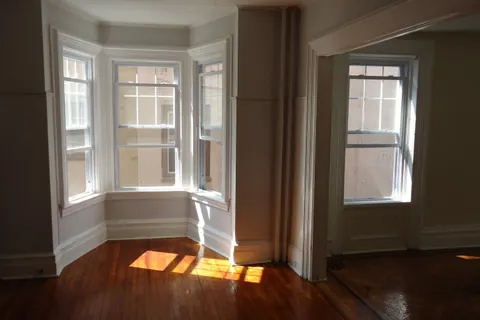
Flooring
9 Irving A 2014 hardwood floors living room and part of bedroom — Tomwsulcer
CC0
Center cropped to 3:2, resized to 480/960 pixels, converted to WebP. Photo derivatives retain the original photo license.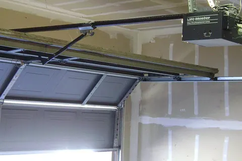
Garage & Garage Doors
Garage door opener — Oleg Alexandrov 21:31, 9 February 2008 (UTC)
Public domain
Center cropped to 3:2, resized to 480/960 pixels, converted to WebP. Photo derivatives retain the original photo license.- Handyman
Various hand tools and hardware items scattered on an old green workbench in a workshop — Shixart1985
CC BY 2.0
Center cropped to 3:2, resized to 480/960 pixels, converted to WebP. Photo derivatives retain the original photo license. 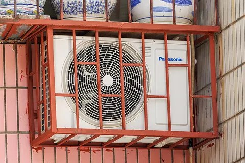
HVAC & Heating/Cooling
Panasonic AIR CONDITIONER OUTDOOR UNIT (381) — Dinkun Chen
CC BY-SA 4.0
Center cropped to 3:2, resized to 480/960 pixels, converted to WebP. Photo derivatives retain the original photo license.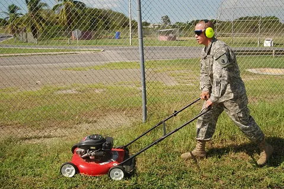
Landscaping
Lawn Mowing DVIDS119604 — Staff Sgt. Brian Jopek
Public domain
Center cropped to 3:2, resized to 480/960 pixels, converted to WebP. Photo derivatives retain the original photo license.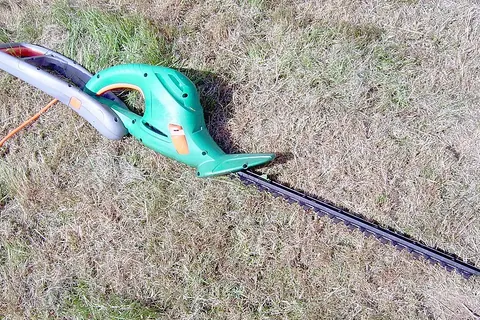
Landscaping & Yard
BnDHedgeTrimmerExtended — Simon Speed
CC0
Center cropped to 3:2, resized to 480/960 pixels, converted to WebP. Photo derivatives retain the original photo license.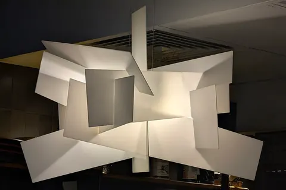
Lighting
Geometric white pendant lamp chandelier — Oleslawlama
CC BY-SA 4.0
Center cropped to 3:2, resized to 480/960 pixels, converted to WebP. Photo derivatives retain the original photo license.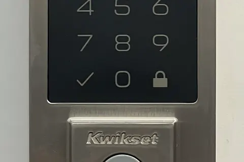
Locks & Security
Kwikset 270 CNT Electronic Deadbolt Lock — TaurusEmerald
CC BY-SA 4.0
Center cropped to 3:2, resized to 480/960 pixels, converted to WebP. Photo derivatives retain the original photo license.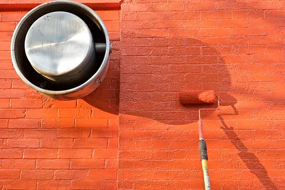
Painting
Paint roller 4 — Michael Cory
CC BY 2.0
Center cropped to 3:2, resized to 480/960 pixels, converted to WebP. Photo derivatives retain the original photo license.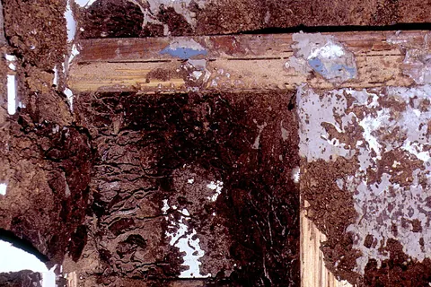
Pest Control
CSIRO ScienceImage 2184 Termite Damage to a House — Entomology, CSIRO
CSIRO
CC BY 3.0
Center cropped to 3:2, resized to 480/960 pixels, converted to WebP. Photo derivatives retain the original photo license.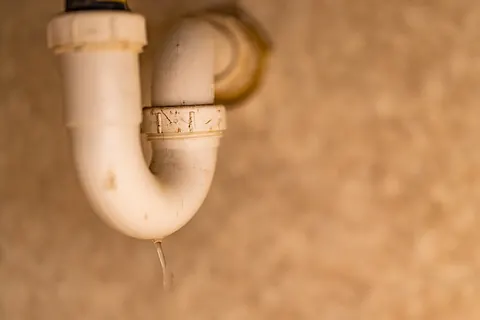
Plumbing
Leaking PVC Pipe Under Sink - P Trap (52842956605) — Tony Webster
CC BY 2.0
Center cropped to 3:2, resized to 480/960 pixels, converted to WebP. Photo derivatives retain the original photo license.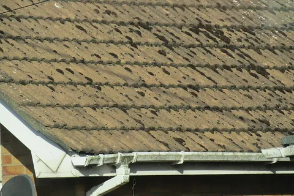
Roofing & Gutters
-2020-05-23 Roof tiles and plastic guttering, Trimingham, Norfolk — Kolforn
CC BY-SA 4.0
Center cropped to 3:2, resized to 480/960 pixels, converted to WebP. Photo derivatives retain the original photo license.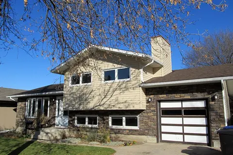
Siding
New House Siding (23781939893) — daryl_mitchell from Saskatoon, Saskatchewan, Canada
CC BY-SA 2.0
Center cropped to 3:2, resized to 480/960 pixels, converted to WebP. Photo derivatives retain the original photo license.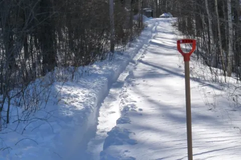
Snow Removal
Snow shovelling — Jeff the quiet
Public domain
Center cropped to 3:2, resized to 480/960 pixels, converted to WebP. Photo derivatives retain the original photo license.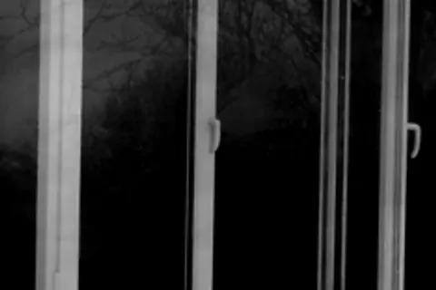
Windows & Glass
Double glazing — Ftm100
CC BY-SA 3.0
Center cropped to 3:2, resized to 480/960 pixels, converted to WebP. Photo derivatives retain the original photo license.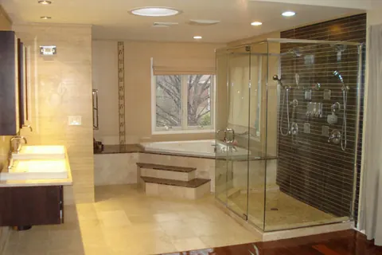
Bathroom
Modern Bathroom Designs — Alyssacrafto
CC BY-SA 4.0
Center cropped to 3:2, resized to 480/960 pixels, converted to WebP. Photo derivatives retain the original photo license.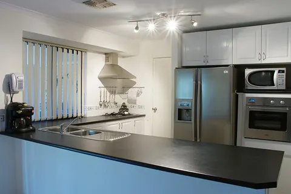
Kitchen
Modern kitchen gnangarra — User:Gnangarra
Photographs by Gnangarra...commons.wikimedia.org
CC BY 2.5 au
Center cropped to 3:2, resized to 480/960 pixels, converted to WebP. Photo derivatives retain the original photo license.- Water Damage
Courtroom 14 South water damage, Thomas F. Eagleton U.S. Courthouse (2011) — United States District Court for the Eastern District of Missouri
Public domain
Center cropped to 3:2, resized to 480/960 pixels, converted to WebP. Photo derivatives retain the original photo license. 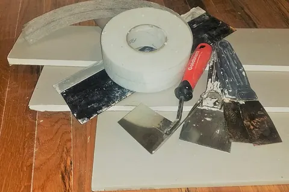
Drywall & Wall Repair
Drywall and tools — Timothyjosephwood
CC BY-SA 4.0
Center cropped to 3:2, resized to 480/960 pixels, converted to WebP. Photo derivatives retain the original photo license.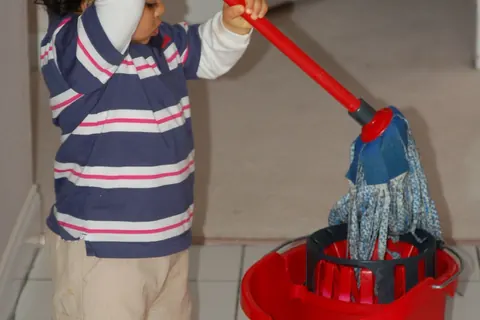
Cleaning
Mohkam Mopping — Hardeep Singh from Vancouver, Canada
CC BY 2.0
Center cropped to 3:2, resized to 480/960 pixels, converted to WebP. Photo derivatives retain the original photo license.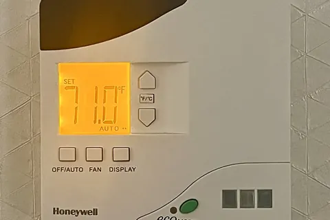
Smart Home & Technology
Honeywell E528 Smart Digital Thermostat — TaurusEmerald
CC BY-SA 4.0
Center cropped to 3:2, resized to 480/960 pixels, converted to WebP. Photo derivatives retain the original photo license.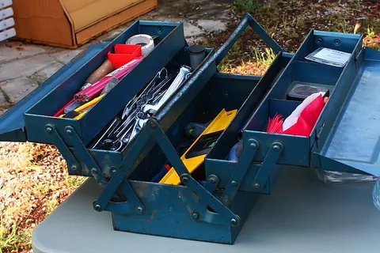
Other
Caisse à outils avec petit outillage — Rieul Techer
CC BY-SA 4.0
Center cropped to 3:2, resized to 480/960 pixels, converted to WebP. Photo derivatives retain the original photo license.


.jpg){kind=link}


.jpg){kind=link}

.jpg){kind=link}


.jpg){kind=link}